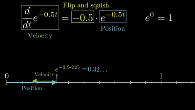
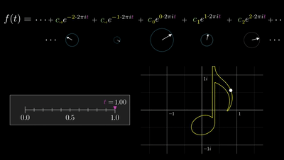
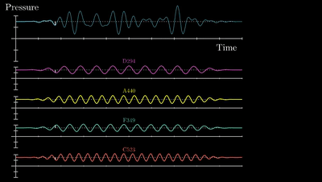
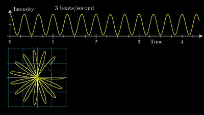
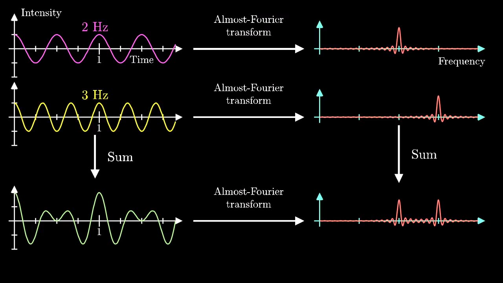

Math-Fouriter
欧拉公式 Euler’s formula
- $\frac{d}{d{\color{Red}t}}{\color{Green} e^t} = {\color{Blue} e^t}$
将${\color{Red}t}$看作时间，${\color{Green} e^t}$看作质点的速度，${\color{Blue} e^t}$看作质点的位置。此时速度与位置符号相同。

- $\frac{d}{d{\color{Red}t}}{\color{Green} e^{2t}} = {\color{Blue} 2\cdot e^{2t}}$

- $\frac{d}{d{\color{Red}t}}{\color{Green} e^{-0.5t}} = {\color{Blue} -0.5\cdot e^{-0.5t}}$
此时速度与位置方向相反。质点随时间趋于原点。

- $\frac{d}{d{\color{Red}t}}{\color{Green} e^{it}} = {\color{Blue} i\cdot e^{it}}$
在复平面中，速度与位置方向垂直。质点不断旋转。

得到欧拉公式：
当 $x=\pi$ 时：
傅里叶级数 Fouriter Series
- 傅立叶变换如何理解？美颜和变声都是什么原理？李永乐老师告诉你 - YouTube
- But what is a Fourier series? From heat flow to drawing with circles | DE4 - YouTube
任何周期函数都可以用正弦函数和余弦函数构成的无穷级数来表示（选择正弦函数与余弦函数作为基函数是因为它们是正交的）
如果把一副二维矢量图(svg)看作是一个复平面的函数$s_N(x)$，则这个函数可以用多个旋转的圆$c_n\cdot e^{i\frac{2\pi nx}{P}}$复合来表示。（不知道咋表达orz）$c_n$是一个复数，表示这个圆的初始状态（半径，方向）。$n$表示这个圆的旋转速率。

傅里叶变换 FT
傅里叶变换 （FT） 是一种数学变换，它将函数分解为频率分量，频率分量由变换的输出表示为频率的函数)。最常见的时间或空间函数被转换，这将分别根据时间频率或空间频率输出函数。（将信号的时域转换为频域）。
可以将一个周期函数分解成多个正/余弦函数。

将一个周期函数绕成一个圈，观察这个圈在不同频率下的质心位置。

这个质心位置在某频率表现特殊。

在多个混合的周期函数中，这个现象也成立。

我们把这个绕圈操作视作在复平面下逆时针旋转。根据欧拉公式就是将原函数$g(t)$后乘以$e^{-2\pi ift}$。就把时域$t$转换成了频域$f$。
如果把一个非周期的函数视作是一个周期无限大的函数：
逆傅里叶变换 IFT
将旋转后的函数再顺时针旋转回来，就是$\hat{g}(f)$后乘以$e^{2\pi ift}$：就把频域$f$转换成了时域$t$。
$g(t)=\int^{+\infty}_{-\infty}\hat{g}(f)e^{2\pi ift}df$
快速傅里叶变换 FFT
- The Algorithm That Transformed The World - YouTube
- The Fast Fourier Transform (FFT): Most Ingenious Algorithm Ever? - YouTube
- 快速傅立叶变换 - 维基百科，自由的百科全书 (wikipedia.org)
它能够将计算DFT（离散傅里叶变换）的复杂度从只用DFT定义计算需要的$O(n^2)$，降低到$O(n\log n)$，其中$n$为数据大小。